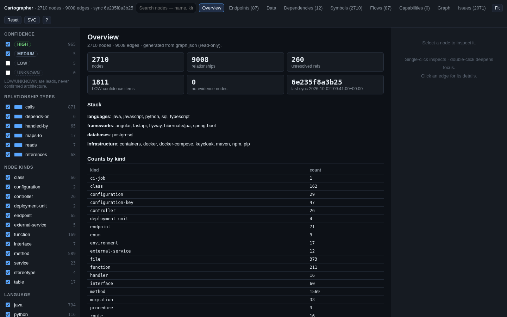
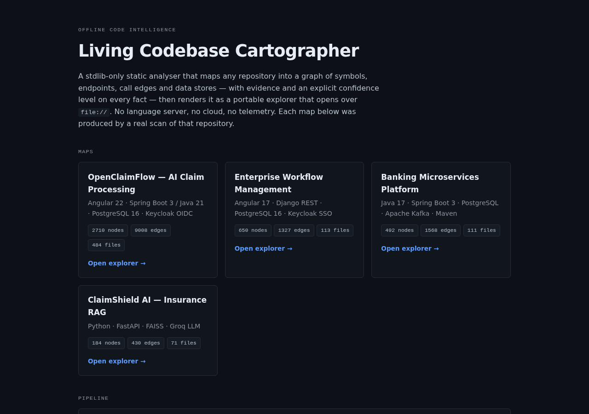
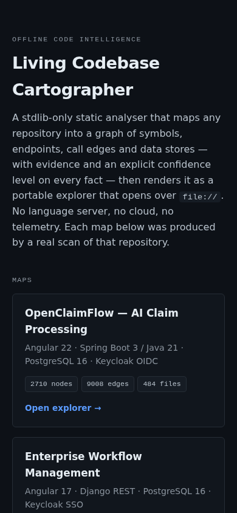

An offline codebase mapper. Point it at any repository and it produces symbols,
endpoints, call graphs, data lineage, blast-radius impact analysis and request-flow
traces — each fact carrying evidence and a confidence level — then renders the result
as a portable HTML explorer that opens from the filesystem.
In plain terms: Point it at unfamiliar code and it produces a map: what calls what, where the data goes, and what breaks if you change something.
Implemented and MIT licensed. It runs offline with the Python standard library only,
and every map it writes is human-readable Markdown alongside machine-readable JSON.
Four repositories have been mapped so far; the figures are in
What it maps below.
On a fixed address — self-hosted, so it is up whenever the machine is running. Each explorer is self-contained and opens from the filesystem; the small landing page that links the four together is the part that needs a server.
What it does
Understanding an unfamiliar codebase normally means either a cloud code-intelligence
service or a language server. This does it offline with the Python standard library
only: no third-party packages, no language server, no network calls, no telemetry.
It walks a target repository, detects the stack from manifests and file content,
dispatches a per-file analyzer, and writes one graph of nodes and edges. From that
graph it answers questions about the code and renders an explorer a person can open
and browse.
Commands
initBuild a map of a repository.
syncIncremental update of an existing map.
statusReport how fresh the map is.
validateCheck integrity and schema conformance.
detectAn evidence-based stack report.
queryLook up facts by kind, name, language or limit.
impactReverse-reachability blast radius for a symbol.
flowTrace a path from one symbol to another.
visualizeRender the explorer, with modes for kind, symbol, impact or flow, a depth control, and an option to serve it.
intent import, intent bindThe intent layer.
why, responsible-forTwo further queries.
Languages
Java, TypeScript and JavaScript, Python, Go, C#, Rust, SQL DDL, and generic configuration, manifests and CI files.
Anything else gets a low-confidence fallback pass rather than being skipped silently.
Two ways to use it
A standalone command-line tool. The commands above, run against a repository on disk.
An AI-agent skill. The same capabilities exposed as thirteen named operations an agent can call.
Architecture
From target repository to artifacts
target repository
| gitignore-aware walk; skips build output;
| never reads .env
v
inventory + change detection
| git when available, else file hashes
v
evidence-based stack detection
| manifests + file content
v
per-file analyzer dispatch
| java | typescript | python | go | csharp
| rust | sql | config | fallback
v
closed schema
| 51 node kinds, 35 edge types,
| confidence levels
v
graph.json -- the single source of truth
|--> Markdown views (architecture, api-map,
| call graph, data flow, database, ...)
`--> HTML explorer (read-only projection)
The schema is closed deliberately. Technology identity such as language or framework
goes into node metadata, never into the set of node kinds, so the vocabulary cannot
sprawl.
The walk is gitignore-aware and skips build output; it never reads a
.env file.
Evidence and confidence
This is the differentiator: no fact is stated without its evidence. Every node and
every edge carries evidence saying whether it was derived from source code or asserted
by a person or an agent, and every fact carries a file and line citation together with
the commit it was last verified against.
HighA direct declaration in the source.
MediumA reference resolved by name.
LowA heuristic or ambiguous match.
Without evidenceAn assertion made without evidence. It is carried as its own level rather than folded into the three above.
Confidence is consumed downstream rather than used as decoration. An impact query prints
each caller and callee with its confidence. The explorer draws high confidence as a solid
line, medium lighter and low dashed, and filters the low and unverified facts out by
default — with per-level counts available when you want them.
What it maps
Four repositories mapped by the tool itself
Codebase
Files
Nodes
Edges
Flow candidates
OpenClaimFlow
373
2,710
9,008
87
Workflow Management System
104
650
1,327
17
Banking Microservices
89
492
1,568
39
ClaimShield AI
40
184
430
5
The tool produced these four maps, so its own output is the evidence that it works —
no figure in that table was typed in by hand. The nodes column counts file nodes as
well as code symbols, which is why it is labelled nodes and not symbols.
Two honest qualifications on that table. The OpenClaimFlow row is whole-directory scope:
that map's root also contained a nested copy of a different project, 45 files and 195
nodes of it, so the row is not OpenClaimFlow alone.
And the tool records how sure it is about every fact, which these totals hide. In the
claims map, 1,800 of the 9,008 edges are low-confidence, 260 facts are unresolved, and
111 files were walked without any analyzer claiming a symbol in them. The explorer shows
and filters all of that; the summary table cannot.
A self-measurement has not been done: the tool has never been pointed at itself, so it
has no files, nodes or edges of its own to quote here. What has been measured is its
source.
The tool's own source, measured locally
Metric
Value
Python modules
16
Lines of tool code
7,837
Lines of tests
2,556
Test checks, all passing
428
The 428 checks are 298 analysis checks and 130 visualization checks, all passing. The
repository's README quotes older figures for both suites, 289 and 130; 428 is what was
measured locally.
Artifacts it produces
graph.json — the source of truth: nodes, edges, evidence, confidence, flow candidates, unresolved and unclaimed files, detected stack, and sync state.
stack.md, modules.md, symbols.md — the detected stack with a confidence per item, plus the module and symbol inventories.
dependencies.md, call-graph.md, data-flow.md — imports and injections; call and handler edges; read, write and query lineage.
api-map.md, database.md, external-services.md — endpoints with their handlers; tables, views, migrations, sequences and procedures; external services and their callers.
authentication.md, configuration.md, deployment.md — auth guards, configuration keys and environment variables, deployment units and CI jobs.
architecture.md — the file a curated summary belongs in. It is written once and never overwritten by a later sync, but in all four maps produced so far it is still an empty template waiting to be filled in.
business-flows/ — generated flow candidates. In the four maps produced so far these remain candidates; no curated flow has been written yet.
state/ — freshness and incremental-sync state.
visualization/ — the explorer: an HTML file plus its data.
The explorer
Each map renders to a read-only projection of the graph that a person can open and
browse without a server.
Nine views. Overview, endpoints, data, dependencies, symbols, flows, capabilities, graph and issues.
Nine graph modes. Architecture, dependency, call graph, data flow, API, database, external services, impact and flow.
Reading it. Pan and zoom; click a node for an inspector showing its metadata, a source citation and its incoming and outgoing relations grouped by type; search across name, kind, file, endpoint and language; filter by confidence, relationship type, node kind, language and focus depth; copy as CSV or Markdown; export SVG; and deep links that address a specific node, mode, view, impact analysis, endpoint, edge or depth.
Self-contained. The styles and scripts are inline, there are no network calls at all, and the graph is injected as a script rather than fetched — which is what lets it open directly from the filesystem.
Rendering is capped so a large repository stays usable. 300 nodes are drawn at once, with a notice showing how many of the total are shown; 3,000 symbol rows; 400 nodes and 1,200 edges per graph mode; 60 architecture groups; and 120 nodes in a focused impact or flow view.
Known limitations
The tool has not been pointed at itself.
Its own code has not been measured, so this page quotes no file, node or edge count for
the Cartographer itself — only the line, module and test figures above, which were
counted locally.
Curated records are not existing output. In the four maps produced so far, the curated decisions and changes directories are empty and the flows directory holds only generated candidates. Nothing has been curated yet.
No plugin or hook system. Extending the tool means adding an analyzer module to a static registry.
The landing page needs a server. The four explorers are each self-contained, but the small landing page that links them together uses absolute paths and therefore needs a web server rather than the filesystem.
Screenshots
The generated explorer first, then the landing page that links the maps. The landing page's file counts read higher than the table above, and the difference is real rather than a mistake. That page counts every file walked, including files no analyzer claimed a symbol in; the table counts file nodes recorded in the graph.

The explorer's overview for one map: node and edge totals, the detected stack, counts by kind, and the confidence filters down the left. It is a single self-contained page with no network calls.

The landing page, which links the maps the tool has produced.

The same page at phone width, with the map entries stacked.
There is no screenshot of the command-line output.